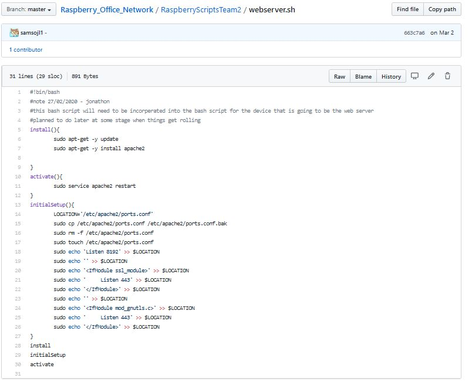
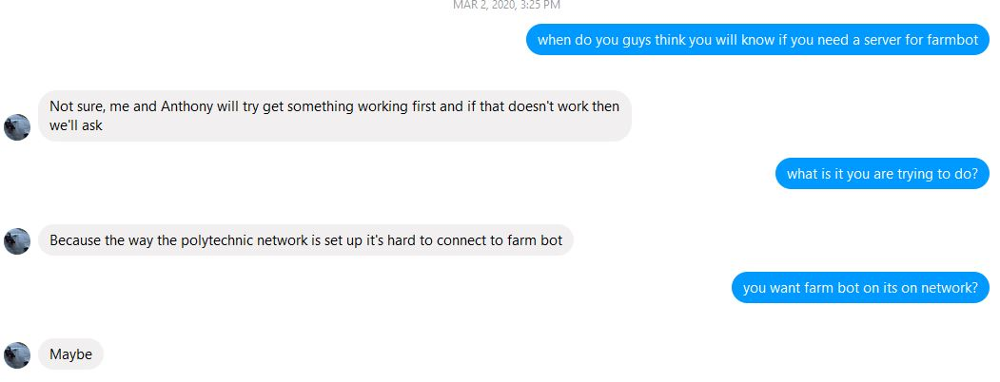
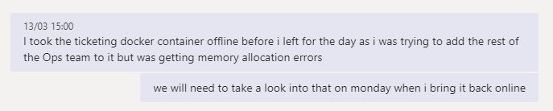
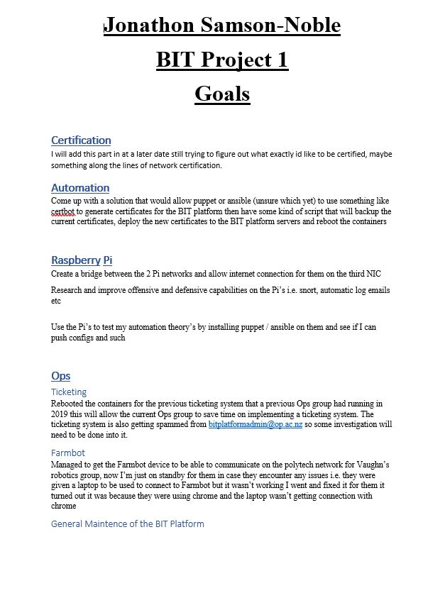
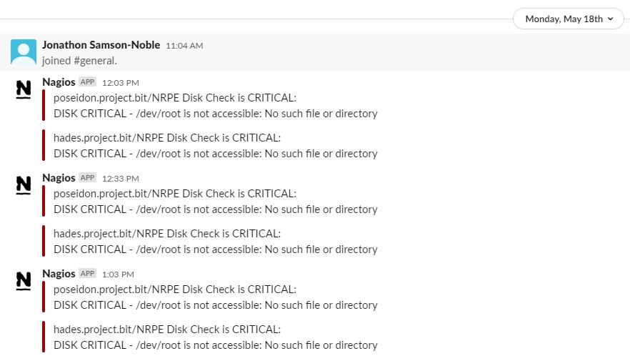
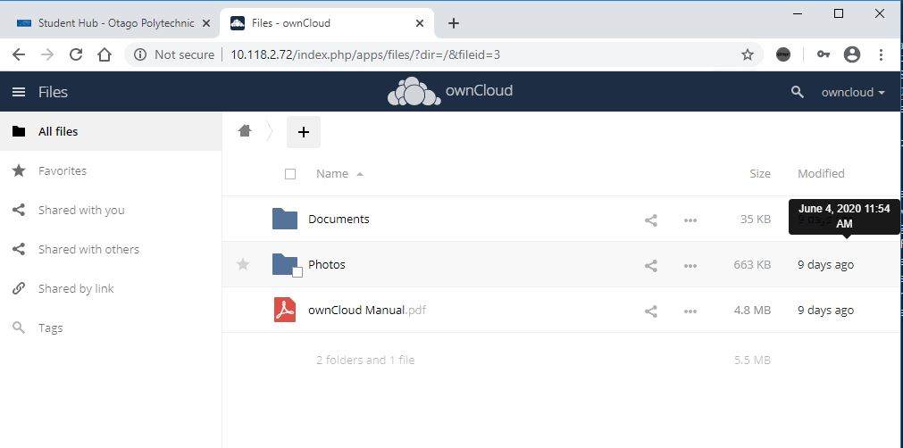
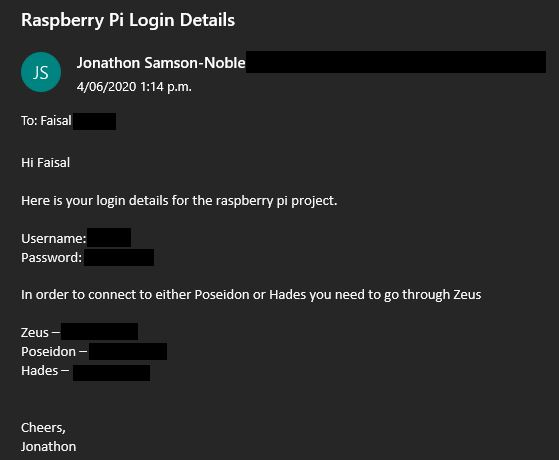
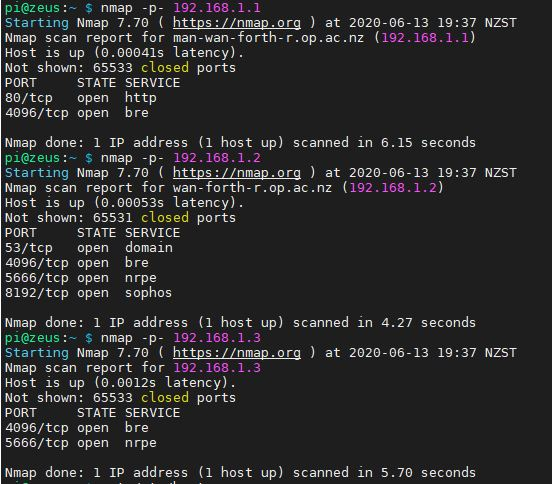

Week 1 17 — 23 February, 2020
Monday
This was the first project class of the semester where i got to see all the teams and the projects for those teams avaliable, i made my choice on the security and operations project team led by Faisal Hasan which was ideal because i've had classes with him in the past i.e. Linux in year 2 semester 2
This class was when we initial setup our machines and choose where we were going to sit although this spot might not be final untill thursday when we find out in the second project class of the week if we actually got into the project teams that we wanted.
We were also tasked with filling out a computer health and safety moodle module and fill out an after-hours access allowing for our ID cards to get into the project room, i printed out and filled in the after-hours access form and returned it to Rob and then was going to start the health and safety module but access was restricted so no one in the class could do it at the time
Tuesday
No project work was achieved as i had yet to be informed of what project group i was assigned to.
Wednesday
The health and safety moodle module was finaly unrestritced so i was able to get onto it and complete it before the next scheduled project class
Thursday
I successfully got placed into the Operations and Security group and was given one of the Raspberry Pi clusters to work with, the objective of the raspberry pi cluster was to simulate a small office enviroment so they would require various services such as a mail server or a website. After the raspberry pi's were all set up, we were to attack and defend against the other Raspberry Pi team so in order to achieve this i decided to install download and flash kali linux onto all of the raspberry pi SD cards but after i did this i realised i was off the mark and that they should be command line based and not GUI's so with that knowledge and some assisstance from James i instead downloaded and installed Raspbian Buster Lite which is a command line based linux system
Friday
After setting up Raspbian on all 3 of the raspberry pi's in my team’s cluster I then had to figure out how to connect to them remotely in order to configure them, after doing some googling on this subject i learnt that you needed to create a file and rename it ssh on the sd card this then enables ssh on the raspberry pi allowing for remote connection all that was left now was to figure out what the ip address of the raspberry pi's were.
After googling to find out what the ip address was of a connected raspberry pi i came
accross a stackoverflow post that answered this question and it was to run the following
command seen in the picture below 
I proceeded to turn the devices on and discover there ip one at a time in order to not get confused with which device in the cluster stack had which ip, once i had all of the ip addresses for the raspberry pi devices i then connected to each of them through ssh and setup basic configuration of the devices such as changing the hosts and hostname of the devices.
Week 2 24 February — 1 March, 2020
Monday
Tuesday
After bricking the raspberry pi's numerous times and having to reflash Raspbian back onto the SD cards i decided to start working with bash scripts for each server so that way if i broke it and had to reset it i could easily revert it back to the point before i broke it, it also had the added benefit of being able to make sure that all of the machines were configured similar
Wednesday
Thursday
Kane and I decided to create a git repository for the raspberry pi project so that we
could upload our scripts, guides and other various related information
Here is a link to the github repository https://github.com/dunnkh1/Raspberry_Office_Network
Friday
After recieving my research topic assessment from Michael for IN723 Advanced Networks one of the avaliable topics was network automation i decided to research Ansible a network automation tool and my end goal was to figure out how to implement this onto the raspberry pi's, after i have completed my research assignment i will attach a copy of it to this portfolio as it will serve as the basis of how i figure out to get ansible working on a raspberry pi network
I started to create more specific scripts for the installation and setup of specific services and configuration such as one that was dedicated to setting up a basic apache2 web server
Week 3 2 — 8 March, 2020
Monday
I had heard from Damian in Vaughn's robotics project that they may require some
assisstance in getting farmbot up and running

After my mornings System's Administration class on using puppet to help automate tasks and setup and such, i began thinking more about using ansible.
Tuesday
Now that the raspberry pi's are on a private network i needed to confirm that i could still git push and pull from the private ip devices which thankfully i could
Wednesday
I began to test Msmtp/mutt in order to email logs from /var/log/ to an email address for the purpose to notify if anything unusal was happening but to begin with a i just sent the syslog’s
Thursday
After sucsess with manually sending logs i decided to create a cron hourly job and see if that would work to send email logs every hour, i did this for about 2 days before i decided to stop it for the moment as nothing important was happening and i would reconfigure it and implement it back later on when the attack and defending scenarios were happening
Friday
I began looking into helping the farmbot team as they were unable to connect to there farmbot device unless they were using mobile data which wasn't a plausable option for
them
My initial thought was that I could setup a private network inside the polytech using a
raspberry pi to create a wireless access point and hope that would allow the bypassing
of the polytech policies.
I used the following 2 guides to quickly set it up
- https://howtoraspberrypi.com/create-a-wi-fi-hotspot-in-less-than-10-minutes-with-pi-raspberry/
- https://github.com/billz/raspap-webgui
After getting everything setup i then proceeded to re-flash the farmbot os onto the raspberry pi device that was going to be used for farmbot i then connected this device to farmbot hardware and turned it on, i then connected to the farmbots device initial setup Wi-Fi where i then choose for its connection to the internet to be that of the raspberry pi's private network that i had setup after this was done i then connected to the private network on the mobile device and went to the farmbot web url https://my.farm.bot/ which allowed me to access the web interface for the farmbot device, in theory this should have allowed me to use the controls to move the farmbot hardware but atlast it did not so i had to come up with a new plan on how to get connection between farmbot and the mobile device.
later on, that day i had an idea that i could try to setup a vpn that would allow me to bypass the polytechs policies that were blocking connections, i took this idea to Rob to see if it would be ok or if it would cause some issues and if it could possibly work, he said it should be ok since we were third year students and were doing it for a non-malicious purpose and also confirmed that it might be a possible solution
Week 4 9 — 15 March, 2020
Monday
Tuesday
Wednesday
Farmbot is now successfully working
After all my previous attempts to get Farmbot running I went back to the FarmBot2020
GitHub repo https://github.com/Lockam1/FarmBot2020
and investigated the network
documentation that was from previous semesters.
After looking at WirelessConnection-MAY19.pdf I saw that Rob had requested a key from
ITS for the MAC address associated with the Farmbot device and they then mention that it
is on the OP-Mobile network, after seeing this I then went over the other files and saw
in ConnectionIssues-OCT19.pdf that there was a mention of checking if it will work
eduroam network. In the document 2019LAN-WiFi%20connection-Pre-Showcase.pdf they
mentioned that they but the MAC address of the Farmbot device on wireless vlan 35 which
doesn't have any port restrictions.
So, after reading all this I went to check with Rob if maybe the reason it didn’t work
was because the device the students were using was not also in the same network / vlan
as the Farmbot device I also asked if the previous Farmbot group had tried this solution
which he was unsure of. I also checked in with Vaughn to update him on the plan as well
as asked him about if he knew if the previous group had attempted something similar to
which he was unsure of (this gave me some hope that it was going to work).
I then proceeded to take myself and Damian over to ITS to get his device placed on vlan
35 in the OP-Mobile network, but Perrin was unavailable so instead I sent an email to
him. While I was waiting for a response, I flashed the SD with a fresh install of Farmbot
and was going to place the key onto the Farmbot device so it would be set to go as soon
as we heard back from Perrin with the key for Damian's device, when I was about to set
the Wi-Fi to "OP-Mobile" I noticed that it didn’t have a key icon next to it and went to
talk to rob about this, I then had the idea of manually setting the network to
"OP-Mobile" this then asked me to input the key which I did.
For some reason I then thought maybe 50/50 this might work so I connected my mobile
phone to the eduroam network and went to my.farm.bot which then proceeded to work but in
order to actually confirm that I could move Farmbot from the app I then had to plug it
in with the help of James Wood, we pressed the arrows on the web app and BAM it worked
but in order to see if it was actually working and not a fluke, we got James to connect
to Farmbot on his device and see if he could also operate it which he could.
The answer was in the documentation all along, but it was spread out over different docs
we will now condense the solution in order to make future groups life a bit easier.
Thursday
I managed to successfully reboot the previous used ticketing system for the Operations
and Security team i also added myself as an admin for the ticketing system via the
command line this allowed me to disable the previous semesters accounts so they couldn't
see our current tickets this was done purely as a security measure, i also create
accounts for the current team and upgrade the previous semester members that were now in
project 2 to admin accounts this allows everyone to work with the ticketing system, I
then informed Faisal on the progress of the ticketing system.
Before i left for the day i had to take the ticketing system offline due the
excessive spam it was outputing to both the email addresses of the admin accounts and to
the system itself. 
When i arrived home i then informed Matthew Hall who was the lead on working with the ticketing system and was looking at possible new applications to serve this function that i managed to reboot the previous ticketing system that was in place
After getting the ticketing system back up and running i noticed that there was a large amount of tickets still remaining from the previous semester further investigation into these tickets saw that they were being automaticaly generate based on the nagios server checks and we were recieving a large amount of spam
Friday
Week 5 16 — 22 March, 2020
Monday
In the Operations and Security meeting i updated the group on the progress of Farmbot which was not officaly up and running and that a report will be compiled with the process of figuring out the solution and the support documents that were used, Matthew also informed the group about the progress i had made with the ticketing system and that we would instead use that instead of a new application as it was already working and other applications would have required time investment
I also
Tuesday
Wednesday
Thursday
Friday
After talking one on one with Faisal earlier in the week about what i wanted to achieve for this semester i wrote up and emailed my goals to Faisal 
So far i have managed to get both the ticketing system running as well as Vaughn's robotics project's team Farmbot and a basic running raspberry pi office network.
Week 6 23 — 29 March, 2020
Monday
Kane and I decided to come in on Otago Aniversery team in order to implement bridging through the linux machine provided, our bridge was built using reference material from last semesters linux labs where we had to create a network bridge for one of our labs, I managed to get the bridge setup and working on my system but unfortunatley Kane's wasnt working, this turned out to be caused by a conflict with iptables, so we removed that so, his bridge could work correctly. After we got the bridge working for both machines, we rebooted all the machines and for a reason we didn't discover at the time it broke the bridge we had created, so we quickly got the bridge back up and finished for the day.
Tuesday
After recieving an email from polytech informing us that the building will be locked due to covid-19 at 5pm i talked with Kane and we decided to revert the bridge change and continue with the previous way we were working so that we could successfully connect and reset the devices from home this allowed us to work on the raspberry pi project from home without worrying about breaking the raspberry pi's
Wednesday
Thursday
Friday
Holidays 30 March — 12 April, 2020
Due to Covid-19 and the rapid esculation of New Zealand's Alert level, Otago Polytechnic's holidays were brought forward 2 weeks.
I took this time to try come up with a plan of how i was going to deal with the raspberry pi project remotely and relax.
Week 7 13 — 19 April, 2020
Monday
Tuesday
Wednesday
Thursday
Friday
Week 8 20 — 26 April, 2020
Monday
Tuesday
Wednesday
Thursday
Friday
Week 9 27 April — 3 May, 2020
Monday
Tuesday
Wednesday
Thursday
Friday
Week 10 4 — 10 May, 2020
Monday
Tuesday
Wednesday
Thursday
Friday
Week 11 11 — 17 May, 2020
Monday
Tuesday
Wednesday
Thursday
Friday
Week 12 18 — 24 May, 2020
Monday
I took what i learnt in System's Administration and added both owncloud and nagios to the
raspberry pi's in order to help reinforce familiarity with installation and
configuration of these softwares.
My next plan was to find a way to get nagios to send alert message to the Operations and
Security team channel and i learnt that it's kind of difficult, i needed to create a
webhook that could be used to connect nagios and teams together which was easy enough to
setup.
But unfortunatley it was more complicated to actually implement it afterwards so instead
i then decided to create a slack channel for the raspberry pi project that i could use
to test if nagios would correctly be able to send messages of errors in the configured
nagios checks, after i got nagios and slack both ready to go i then proceeded to create
a nagios check that would test disk space on the raspberry pi devices and i set it so it
would appear that they were full in order to force a notification to slack from nagios
which worked as planned 
After it was all setup i did some further research and tried to find out if you can send
notifications from slack to Microsoft Teams, and it turns out you can, but they are paid
applications
Tuesday
Wednesday
Thursday
Friday
Week 13 25 — 31 May, 2020
Monday
Tuesday
I went into polytech to see what was the issue with the raspberry pi "zeus" connection so because i couldn't ssh onto it i had to plug a mini hdmi cable and keyboard into the device so i could connect and see what was happening that way, when i got it all connected it turns out that the top raspberry pi which was meant to have the SD card configured with the zeus configuration instead had the poseidon card in it, so i swapped the cards over and rebooted them both and confirmed that it was all back up and running
Wednesday
Thursday
I was trying to ssh onto the zeus raspberry pi from home but was getting connection
refused so i went onto my mgmt server for System's Administration and nmap'd the zeus ip
and discovered that the command nmap -p- 10.118.2.72 wasn't returning open ports so
instead i had to use nmap -Pn- 10.118.2.72 and discovered that it was being filtered
So i contacted Damian to see if he was
on site at polytech for his robotics project and he was, so i asked him if he could
spare a moment and go over to the raspberry pi machines and connect to the top device on
the raspberry pi stack which was meant to be zeus but when he got onto it, it once again
was poseidon which led me to believe someone was messing with it, after this the zeus
raspberry pi began to have kernel panics and wouldn't restart correctly so i decided i
would come in the next day and once again fix it.
Friday
So i had to go back into polytech because the raspberry pi "zeus" was having kernel issues so once again i had to connect an hdmi cable and keyboard to get onto it, after googling how to fix it by checking the error code it was giving i then took the sd card out of zeus and plugged it into the card reader connected to a linux machine that we had setup to act as a bridge and began to modify files that should have fixed the problem according to the answers i discovered when googling the error. After about an hour of trying to fix it i had to give up and instead just reflashed a fresh Raspbian Lite image onto it i then put the sd card into the raspberry pi and rebooted it. I then configured port_forwarding and recreated the virtual interfaces on the device so that the other 2 raspberry pi's could still access the internet i then ran the scripts to get it initally configured with the host names and user accounts although this time i removed the other teams account from the creation script, i then confirmed that everything was working correctly by logging onto both the other raspberry pi's and doing ping tests between each other, the default gateway (zeus) and google (8.8.8.8) all of these came back with a positive connection
Week 14 1 — 7 June, 2020
Monday
After my weekend one on one meeting with Tom for System's Administration and our
discussion on the puppet owncloud module i decided that i would create a bash script
that would install and setup owncloud and its various required modules, i then took this
script and deployed it on zeus in order to get owncloud back up and running quickly,
after deploying this script owncloud is now working once again on zeus
Although you can only connect to it by being
connected directly to the polytech network or going through something like citrix
Tuesday
Wednesday
Thursday
I created login credentials for Faisal and added him to the sudo group i then email'd him
those credentials along with the list of ip's required and instructions on how to
connect to each device.

I have
redacted sensitive information from the above image for security reasons.
Friday
Week 15 8 — 14 June, 2020
Monday
Today Faisal informed us that he had installed vulnerabilities on our raspberry pi
systems and that we needed to discover, exploit and then fix them. I was able to nmap scan my own devices in order to discover if any new ports had been opened 
On the device with the ip of 192.168.1.2 i noticed that port 53 as well as 8192 had been opened which leads me to believe these were the vulnerabilities that Faisal had deployed on our servers, now all that was left to do was to figure out how to fix what Faisal did.
I also knew the default login details for the other team's raspberry pi as they hadn't changed it so i logged onto their gateway server and nmap'd the gateway and there private ip devices to discover the vulnerable ports
After looking at the nmap scan of the other team's devices and comparing it with my own i can see that both networks have a vulnerablitie on port 53 and they may also have one on port 44306 unless that is being used by something they installed.
Tuesday
Wednesday
Thursday
Today i checked in with the farmbot team and confirmed if they were still having issues being able to connect to farmbot to which they were so i messaged Damian later on in the evening to let him know that when i go in tomorrow i'll look into it and see if i can get is fixed
Friday
Once again farmbot is working correctly from both the mobile and laptop device, I'm not 100% sure on what was the cause of their problems as i followed the instructions from the printout that i gave them when i first got it working but it may have been because I used WPA instead of WPA2. I may repeat this process a few more times next week to just confirm it the problem was WPA instead of WPA2.